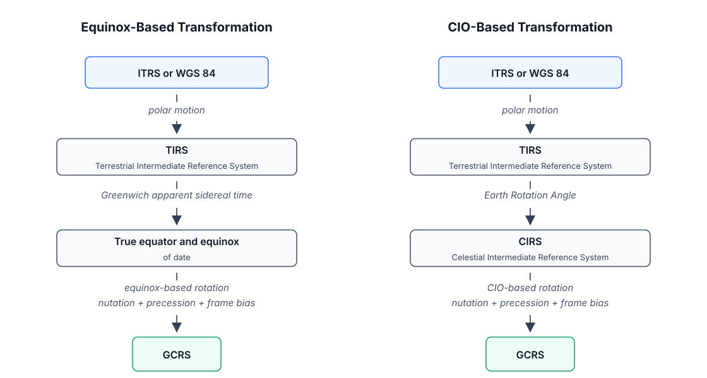
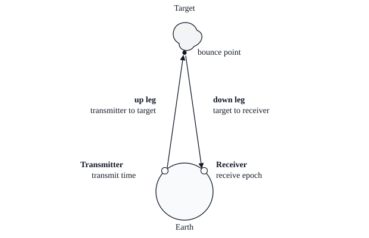
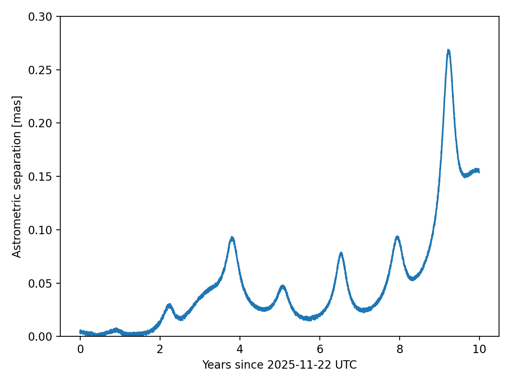

DiffOrb
A differentiable and batchable framework for small-body orbit prediction and orbit determination
Talk structure
- Overview and scientific scope
- Technical architecture
- Core algorithmic models
- Ephemeris products compared with JPL Horizons
- Orbit determination compared with JPL Horizons
Canonical contracts
Dynamical states use BCRS/ICRS axes, TDB epochs, position in au, and velocity in au per day.
Computation model
Objects are batch-aware PyTrees where numerical leaves can be mapped by JAX over scalar, broadcast, or grid inputs.
Reference checks
Current workflows include milliarcsecond ephemeris checks and kilometer-scale fitted-state checks against JPL Horizons.
What Is DiffOrb?
DiffOrb is a framework for small-body orbit prediction and orbit determination. Its numerical core is designed around differentiable arrays, batch dispatch, and shared models between prediction and fitting.
Main capability groups
- Small-body state representation and frame conversion.
- Time-scale conversion and split Julian-date storage.
- Earth rotation and ITRS ground-site evaluation into GCRS state vectors.
- SPK-backed ephemeris bodies and perturber systems.
- Optical and radar measurement prediction.
- Initial orbit determination and differential correction.
Design goals visible in the API
- Differentiable numerical core: residual Jacobians and radar Doppler can be tied to the same residual models by automatic differentiation.
- Parallel batch APIs: many objects accept scalar or batch inputs without separate batch entry points.
- Broadcast and grid evaluation: public APIs can align matching rows or evaluate target-observer-time grids.
- One model chain: propagated trajectories feed ephemeris products and orbit determination.
Observation coverage
- Ground optical observations.
- Space-based optical observations.
- Radar delay observations.
- Radar Doppler observations.
Scientific Scope And Workflow
Data and epochs
- Observation records from MPC, ADES, and JPL radar sources.
- Planetary and small-body SPK kernels.
- Earth Orientation Parameters (EOP).
- Initial states or orbital elements.
Physical model
- State vectors with frame and epoch contracts.
- Ground and space observer geometry.
- Force models and numerical integration.
- Optical and radar reduction equations.
Scientific products
- Optical tables.
- Vector and radar tables.
- Elements, apsides, close approaches.
- Fitted orbit, residuals, covariance, diagnostics.
Prediction mode
Start from a fixed orbit, propagate once, and reuse the dense trajectory to generate optical, radar, vector, element, and event products.
Orbit-determination mode
Load observations, apply debiasing and weights, build an initial orbit, run differential correction, update the outlier mask, and inspect station-level residual diagnostics.
Layered Architecture
Input layer
- Time, UTC, TT, UT1, TDB, split JD.
- SPK kernels: planets, Moon, selected asteroid perturbers.
- Observation bundles: optical and radar, with observer type metadata.
- Site definitions: MPC observatory codes, JPL radar sites, roving/space records.
- Initial BCRS states or element-derived states.
Model and algorithm layer
- Time and frame conversion contracts.
- CIO-based Earth rotation: ITRS to GCRS.
- DynamicSystem, ForceModel, NumericalIntegrator.
- Optical one-way and radar two-way reduction.
- VFCC17/ADES/manual weights, Eggl debiasing.
- Double-r IOD, damped LM differential correction, outlier masks.
Output layer
- Propagated SmallBody with dense trajectory.
- Optical, vector, radar, element, and event tables.
- DCResult with orbit, residual blocks, covariance status, convergence fields.
- Analyzer tables by observation row, station, and tracklet.
- Reference comparisons with JPL Horizons.
Architectural invariant
The same propagated trajectory and measurement models are used for prediction products and residual construction. This keeps validation against Horizons, orbit fitting, and diagnostics on the same physical model path.
External data boundary
SPK kernels, EOP tables, observatory-code lists, MPC/ADES records, and JPL radar data are explicit inputs.
Numerical boundary
Force-model and measurement equations operate on documented units and frames rather than hidden display labels.
Diagnostic boundary
Fit quality is read through residual blocks, station statistics, covariance status, and outlier masks.
Subsystem Map
| Subsystem | Representative modules | Role in the scientific pipeline |
|---|---|---|
| Core time and state | core/time, core/state, core/element | Store epochs, Cartesian states, elements, frames, and canonical units. |
| Earth rotation and sites | core/earth_rotation, core/eop, body/site | Evaluate ITRS observatory sites as GCRS observer state vectors. |
| Ephemeris access | spk, body/ephbody, ephemeris | Query major bodies and generate small-body prediction products. |
| Dynamics and integration | dynamics, integrator | Define acceleration laws and integrate BCRS/TDB states with dense output. |
| Astrometry | astrometry, astrometry/io, astrometry/reduction | Load observations, debias optical measurements, and predict observables. |
| Orbit determination | od/iod, od/dc, od/outlier | Seed an orbit, refine it with weighted least squares, and update inlier masks. |
JAX surface
Numerical fields are arrays; many objects are PyTrees; batch dispatch uses JAX mapping over data leaves.
Scientific surface
Public objects retain physical labels: epoch, frame, position, velocity, observer site, observation type, and residual block.
State Representation And Batch Semantics
Canonical state contract
- A State is a position and velocity at one epoch in one reference frame.
- The epoch is stored as a TDB view for dynamical states.
- Position is in au; velocity is in au / day.
- The stacked six-vector order is [x, y, z, vx, vy, vz].
- The frame label is part of the state, not external metadata.
Supported state frames
- BCRS: solar-system barycenter, ICRS axes.
- GCRS: Earth center, ICRS axes.
- HELIO_ICRS: Sun center, ICRS axes.
- HELIO_J2000 and HELIO_ECLIP_J2000: heliocentric J2000 variants.
Batch contract
- The same interface handles scalar and batch inputs.
- Numerical fields and object leaves carry batch dimensions.
- Vector component axes are not counted as batch shape.
- Point-wise broadcasting aligns compatible rows.
- Cartesian-product grids evaluate all target, observer, and time combinations.
| Object data | Array shape | Object shape |
|---|---|---|
| One epoch | () | () |
| N epochs | (N,) | (N,) |
| One state | pos.shape == (3,) | () |
| N states | pos.shape == (N, 3) | (N,) |
Time Scales And Epoch Storage
| Scale | Role in DiffOrb |
|---|---|
| TT | Canonical storage scale of Time; bridge to UTC, UT1, and TDB. |
| TAI | Continuous atomic intermediate; TT = TAI + 32.184 s. |
| UTC | Civil observation scale, defined in DiffOrb on or after 1962-01-01. |
| UT1 | Earth-rotation scale used by terrestrial geometry. |
| TDB | Barycentric dynamical scale for states and ephemeris arguments. |
Precision rule
Epochs are stored as split Julian dates: jd = jd1 + jd2. Keeping the large part and small remainder separate reduces precision loss when small corrections are applied to large Julian dates.
UT convention
DiffOrb exposes a mixed UT convention: UT1 before 1962-01-01 and UTC on or after 1962-01-01. This matches the documented JPL Horizons observer-table convention.
Operational dependency
Modern UT1 conversion uses EOP data; outside available EOP spans DiffOrb can fall back to a historical Delta T polynomial model.
Earth Rotation, Frames, And Observer Sites
ITRS to GCRS transformation
- Ground-site positions are stored in ITRS.
- Observation reduction needs observer state vectors in GCRS or ICRS-aligned frames.
- DiffOrb follows the modern CIO-based IAU transformation path.
- The model depends on TT, UT1, and EOP corrections.

CIO-based operational path
- Polar motion: ITRS to TIRS.
- Earth Rotation Angle: TIRS to CIRS, linear in UT1.
- CIP/CIO celestial orientation: CIRS to GCRS.
Short- and long-term models
- From 1799-01-01 through 2202-01-01: IAU 2006/2000A short-term model.
- Outside that interval: Vondrak, Capitaine, and Wallace long-term precession model.
Site rows
- Site ground rows: fixed or roving Earth observers, stored in ITRS and converted through Earth rotation.
- Site space rows: observer state stored directly in GCRS.
Force Models And Numerical Propagation
Gravitational terms
- Newtonian point-mass gravity.
- Point-mass parameterized post-Newtonian (PPN) correction.
- Optional second zonal harmonic (J2) term.
- Selected large asteroids can be included through an extended system.
Non-gravitational empirical terms
Built-in terms share a heliocentric RTN form:
- Symmetric Marsden-style comet outgassing.
- Empirical transverse Yarkovsky-like term.
- Empirical radial solar-radiation-pressure-like term.
Integrator contract
- Exposed methods include DOPRI5, DOPRI8, and IAS15.
- Dense output supports many state evaluations inside one integration interval.
- Light-time correction and ephemeris generation query the dense trajectory instead of reintegrating.
Optical Astrometry Reduction
One-way light-time problem
- The observation epoch belongs to the observer.
- The modeled quantity is the direction from observer to target.
- The target is evaluated at the emission epoch after solving one-way light time.
- Astrometric RA/Dec are angular coordinates of that solved direction in ICRS.
| Place | Model content |
|---|---|
| Geometric | Observer and target both evaluated at the observation epoch. |
| Astrometric | Target moved to emission epoch; one-way light time and Sun Shapiro delay. |
| Apparent | Astrometric direction plus light deflection, stellar aberration, and of-date rotation. |
| Observed | Ground apparent direction optionally corrected for atmospheric refraction. |
Vector mode
- Provides geometric, astrometric, and apparent relative vectors.
- Vectors remain in fixed BCRS axes aligned with ICRS.
- Useful when downstream work needs relative states rather than sky angles.
Observer mode
- Produces astrometric and apparent RA/Dec.
- For ground observers, also produces topocentric azimuth and elevation.
- Auxiliary geometry includes delta, r, phase angle, elongation, and modeled magnitude.
Horizons comparison note
Earth-based apparent RA/Dec can differ from Horizons default apparent coordinates because Horizons documents a legacy IAU 76/80 true-of-date convention, while DiffOrb uses the modern IAU 2006/2000A of-date model.
Radar Delay And Doppler Reduction

Receive-epoch model
- Compute receiver state at echo reception.
- Solve the down leg from target to receiver.
- Solve the up leg from transmitter to target.
- Combine the two legs into delay and Doppler predictions.
Observable contract
- Delay: round-trip signal light time.
- Range: round-trip light-travel distance corresponding to delay.
- Doppler: derivative of the same converged delay model with respect to receive epoch.
- Rate: derivative of round-trip light-travel distance.
Model boundary
The current theoretical radar model is point-target center-of-mass geometry. It does not model surface bounce points, finite-radius targets, shape-dependent scattering, or delay-Doppler image formation.
Delay corrections
One-way legs can include Shapiro delay, tropospheric delay near Earth stations, and solar-corona delay.
Station geometry
The same formulation covers monostatic and bistatic radar by allowing transmitter and receiver sites to differ.
Differentiation link
Doppler is obtained by differentiating the converged two-way delay model, keeping both observables tied together.
Weights, Debiasing, And Outlier Rejection
Debiasing
- Changes optical measurements before residuals are computed.
- Corrects known star-catalog systematic offsets.
- DiffOrb uses the Eggl et al. Gaia-era debias model.
- Inputs include epoch, catalog code, and sky position.
Weighting
- Does not change the measurement.
- Sets inverse-variance weights: w = 1 / sigma^2.
- Radar weights use reported uncertainties.
- Optical weights can use VFCC17, ADES reported uncertainties, or manual overrides.
Outlier rejection
- Outer loop around differential correction.
- Runs only after a converged inner fit.
- Uses a chi-square metric based on post-fit residual covariance.
- Manual masks take precedence over automatic updates.
Load observations and site metadata.
Apply catalog debias corrections to optical angles.
Assign weights from statistical, reported, or manual sources.
Fit the orbit with weighted residuals.
Update inlier masks and repeat if the mask changes.
Initial Orbit Determination And Differential Correction
Initial orbit determination (IOD)
- Provides a starting orbit, not the final fit.
- Currently uses optical observations only.
- Builds a short optical arc and samples candidate triplets.
- Solves each triplet with the Double-r method.
- Ranks candidates by angular residuals before differential correction.
Differential correction (DC)
- Predicts observations from the current orbit.
- Forms weighted residuals against measured data.
- Builds the residual Jacobian with JAX automatic differentiation.
- Uses a damped Levenberg-Marquardt least-squares method.
- Can fit Cartesian state components and exposed force-model parameters.
Returned diagnostics
- Final estimate and orbit state.
- Normalized Residual RMS and residual blocks.
- Convergence reason and accepted iteration counts.
- Posterior covariance, rank, condition, and validity status.
- Outlier iteration counters and masks.
Ephemeris Products Workflow: One Propagated Body
Scenario
- Target: 85472 Xizezong.
- Initial state: BCRS state from JPL Horizons at 2461000.5 TDB, labeled 2025-Nov-21.0.
- Planetary kernel: DE441.
- Small-body perturber kernel: SB441-N16.
- Force model: extended system with selected perturbing bodies.
- Integrator: IAS15 with tol=1e-12.
Core idea
Propagate once, then use the same stored dense trajectory for all prediction products and the Horizons comparison.
| Product | Representative output |
|---|---|
| Optical table | Astrometric RA/Dec, range, elongation, phase angle. |
| Vector table | Geometric, astrometric, and apparent relative vectors. |
| Radar table | Delay, range, Doppler, and range rate. |
| Element table | Osculating heliocentric ecliptic elements. |
| Event search | Apsides and close approaches. |
| Validation table | Daily astrometric separation against JPL Horizons. |
Ephemeris Products: Optical Comparison With JPL Horizons

Comparison configuration
- Target: 85472.
- Observer: 327.
- Time grid: daily UTC epochs from 2025-11-22.
- Quantity: astrometric RA/Dec in ICRS.
- Metric: angular separation in milliarcseconds.
Interpretation
The comparison stays below 0.3 mas over the full daily grid in the documented run. The result used DE441 and SB441-N16; small differences can appear across platforms, JAX/XLA versions, dependency versions, and Horizons service revisions.
Orbit Determination Workflow: 2025 BC10
Observation data
Dynamical setup
- Planetary kernel: local de441.bsp.
- Asteroid perturber kernel: local sb441-n16.bsp.
- Force model: DynamicSystem.from_extended_system().
- Integrator: IAS15, tol=1e-12.
Solver strategy
- IODSolver(max_iter=20, tol=1e-8).
- IOD arc: 1 day, up to 5 candidates.
- DCSolver() for differential correction.
- DC stage: one 365-day arc, so the short observation arc is fit directly.
Policies
- Default optical weights: VFCC17WeightPolicy().
- Available override: ADESWeightPolicy().
- Debiasing: EgglDebiasPolicy().
- Outlier policy: chi-square rejection threshold 5.0, recovery threshold 4.0, up to 10 passes.
Weight Diagnostics And Final OD Result
First solve
Low station normalized residual spreads indicated that default VFCC17 uncertainties were too conservative for W74 and G40 in this run.
| Station | Before override | After ADES override |
|---|---|---|
| G40 | spread 0.0543; 6/6 inliers | spread 0.4757; 6/6 inliers |
| W74 | spread 0.0488; 22/22 inliers | spread 0.8404; 16/22 inliers |
Second solve after weight override
Final BCRS Cartesian state
The stricter ADES uncertainties moved the station spreads closer to one and rejected more W74 observations, as expected from a tighter chi-square test.
Orbit Determination: State Comparison With JPL Horizons
Comparison basis
- Same epoch: 2460762.500000000 TDB JD.
- Same BCRS/ICRF Cartesian state convention.
- DiffOrb state from the second OD run after station weight override.
- Reference state from JPL Horizons.
Scientific reading
The Horizons state comparison is an external ephemeris check on the final fitted state. It supports the consistency of the model chain, but it does not replace residual inspection, covariance health checks, station diagnostics, or sensitivity to data and force-model choices.
Change sensitivity
The result can change if online observations are updated, kernels are changed, force-model settings are changed, or Horizons updates the orbit solution.
| Check | DiffOrb result | Horizons comparison | Interpretation boundary |
|---|---|---|---|
| Position norm | |dR| = 2.273434175148654E-09 au | About 0.340 km | External state agreement at one epoch. |
| Velocity norm | |dV| = 1.373013598168651E-09 au / d | About 0.0024 m / s | Does not replace covariance or residual diagnostics. |
Summary
What DiffOrb provides
- A coherent BCRS/TDB state and propagation contract for small bodies.
- Public time, frame, Earth-rotation, site, ephemeris, and batch APIs.
- Shared optical and radar measurement models for products and fitting.
- JAX automatic differentiation for residual Jacobians and derivative-linked radar Doppler.
- High-level workflows from observations to fitted orbit and prediction products.
Validation evidence in current docs
- 85472 Xizezong optical ephemeris comparison stays below 0.3 mas against Horizons over 3650 daily epochs.
- 2025 BC10 fitted BCRS state differs from Horizons by about 0.340 km and 0.0024 m/s in the documented run.
Important model boundaries
- Canonical runtime field names remain physical and unit-free; units are part of the documented contract.
- Optical apparent RA/Dec comparison must account for apparent-place convention differences.
- Radar reduction is currently a point-target center-of-mass model, not a shape or scattering model.
- Orbit-determination quality requires residual, covariance, station, and outlier diagnostics, not only RMS.
- Online services and kernel choices can change reference numerical outputs.
| Documentation section | Role in this deck | Primary evidence used here |
|---|---|---|
| docs/index.md | Project overview | Feature set, batchability, supported observations, public APIs. |
| docs/concepts | Algorithmic model layer | Time, frames, Earth rotation, propagation, reduction, OD, and outlier contracts. |
| docs/workflows | Reference workflows | Ephemeris and orbit-determination comparisons against JPL Horizons. |